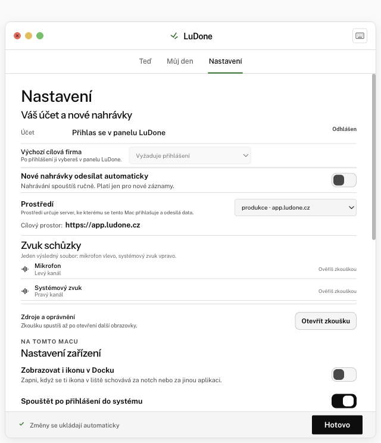
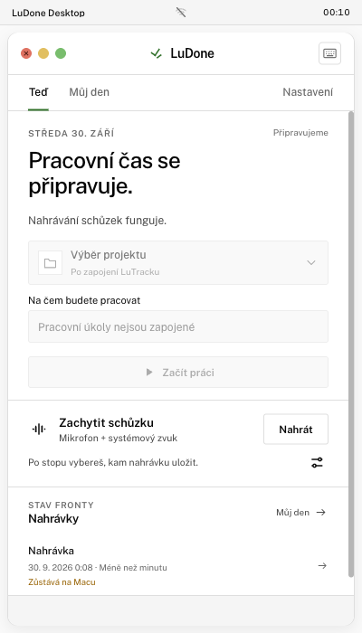
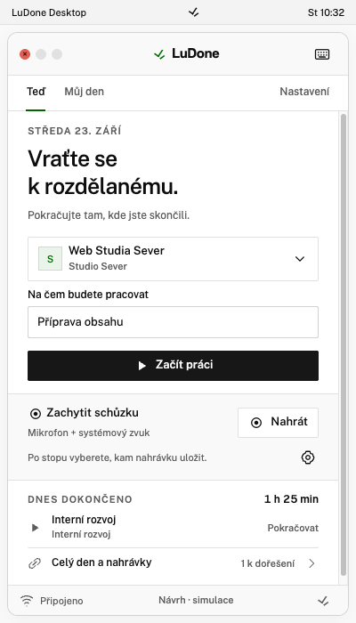
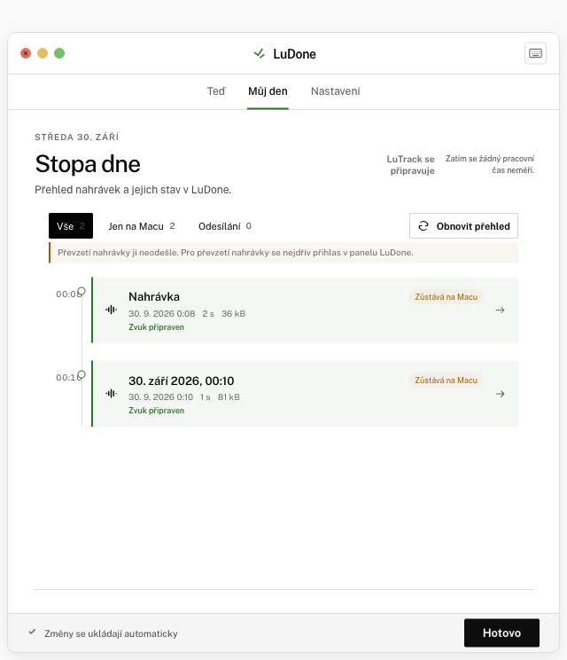
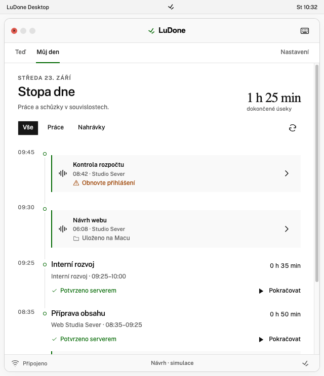
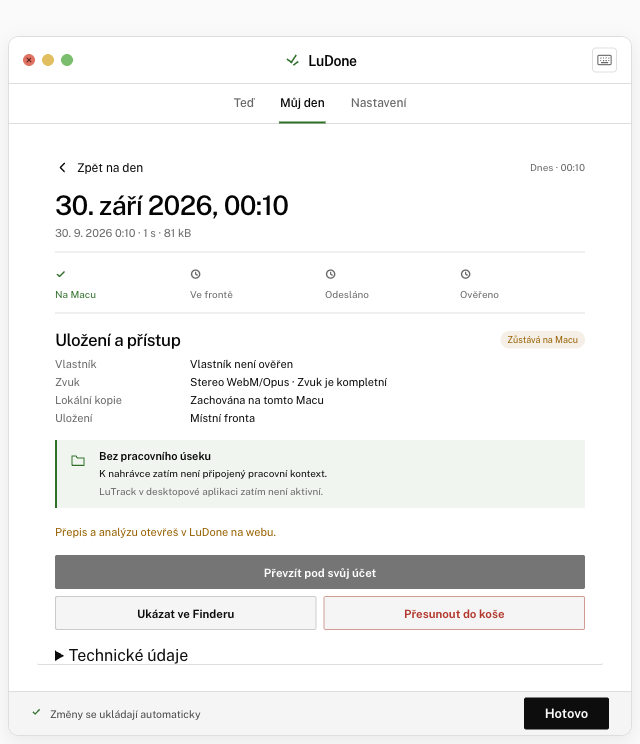
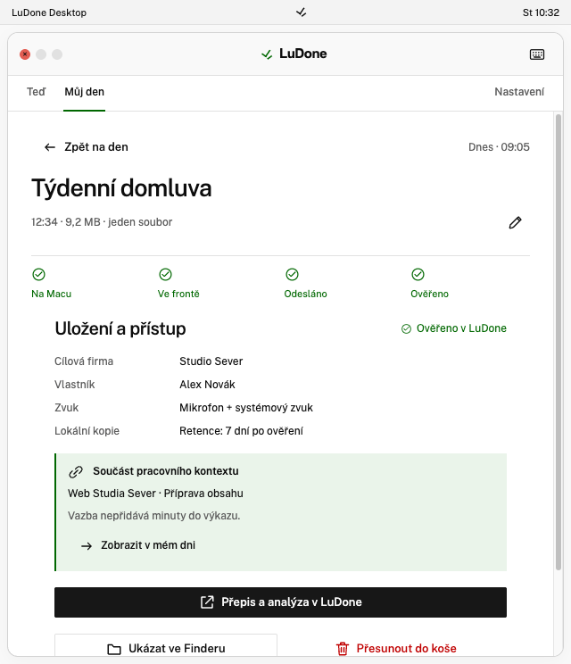
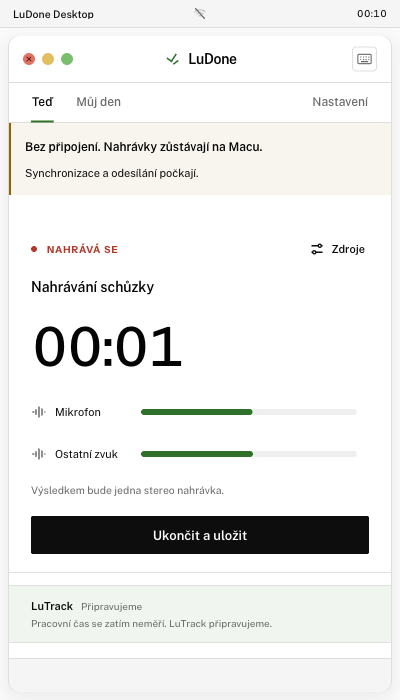
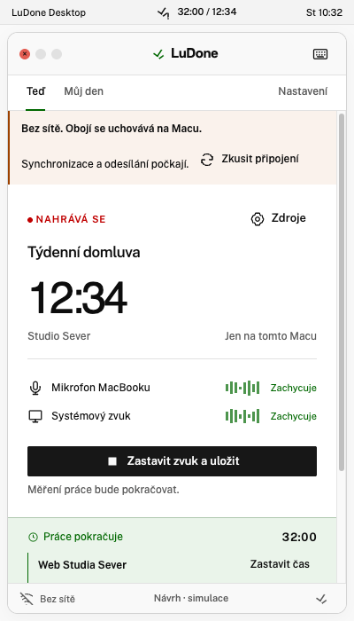

Nastavení · účet a předvolby
Skutečný účet, zvuk, lokální kopie a aktualizace se porovnávají se scénou Astra Nastavení bez fiktivního profilu.


Vlevo je screenshot z běžícího Electron rendereru, vpravo referenční screenshot návrhu. Automatické kontroly ověřují rozměry, hranice a pořadí klíčových prvků; neprokazují pixelovou shodu. Poznámky vysvětlují produktové rozdíly. Výsledek vizuálního porovnání zůstává oddělený.
Produktový LuTrack zůstává poctivě připravovaný; jeho prostor a shell se porovnávají se scénou Astra home.


Srovnává se stejná plocha a hierarchie; pracovní úseky prototypu se nepřenášejí do skutečných dat.


Produktová místní kopie a skutečné bezpečné akce se porovnávají s odpovídající scénou Astra detail.


Skutečný účet, zvuk, lokální kopie a aktualizace se porovnávají se scénou Astra Nastavení bez fiktivního profilu.

Porovnává probíhající nahrávání bez sítě; LuTrack zůstává vypnutý a jeho čas se nevymýšlí.

